Summary: Customize part of the default behavior.
| Version | Status | Date | Authors | Changes |
|---|---|---|---|---|
| v0.1 | DRAFT | 2016-11-29 | mbats | Initial version. |
| v0.2 | DRAFT | 2016-12-14 | mbats | Review the extends mechanism, add the override feature and define the editor evolution. |
| v0.3 | DRAFT | 2016-12-21 | mbats | Details the override mechanism after CBR review. |
Relevant tickets:
Since Sirius 4.0, modelers come with a beautiful properties view by default. This properties view is configured by the default rules. If no Properties View Description is provided then these default rules apply. Else if a Properties View Description exists these rules are not anymore used and only the description defined by the specifiers is used to render the properties view.
The purpose of this evolution is to give the possibility to the specifier to override part of the default behavior and to be able in general to
override and
reuse some parts of a Properties View Description.
We want to keep the same spirit: we render only what is specified. If nothing is specified, the properties view default rules are used else we use what is defined in the Properties View Descriptions.
The specifier must be able to reuse and override different parts of a properties view.
A
Category Description can be created under a
View Extension Description, it contains all the
Pages ,
Groups and
Overrides descriptions. It is used just to order the pages, the groups and the overrides of a VSM.
A category named
Default is created by default by the VSM editor, it contains a default page and a default group.
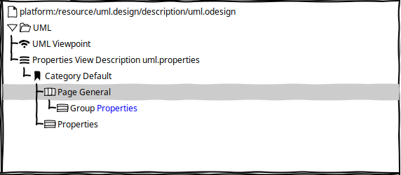
The VSM editor now shows the groups referenced by a page under the page. The referenced group is represented with another color in the tree.
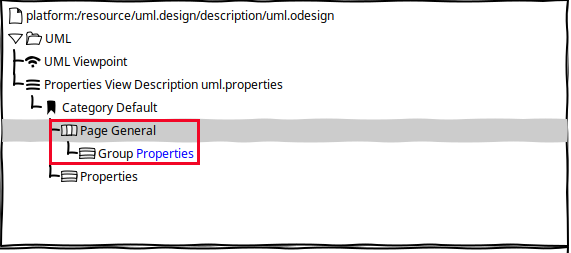
It is possible also to visualize and navigate directly from the referenced group to its controls and styles.
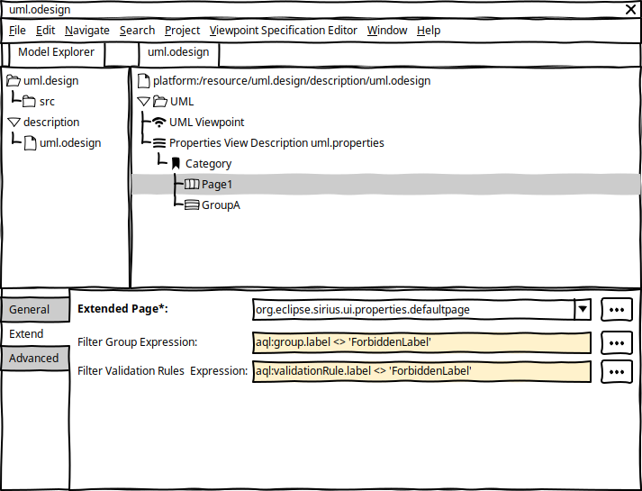
A
Page Description can be used to customize an existing page defined in the same
Properties View Description or elsewhere in another one.
A new
Extend tab is available on a
Page Description.
It defines an
Extended Page field which allows to reference an existing
Page Description.
By default the
General tab fields are set with the values coming from the extended page. The default values are set in grey in the UI. When the user edits one of these fields, it is set by default with the extended value.
In the tree editor, the groups inherited are shown under the page with a decorator referencing the extended page:
Group X [from Page Y].
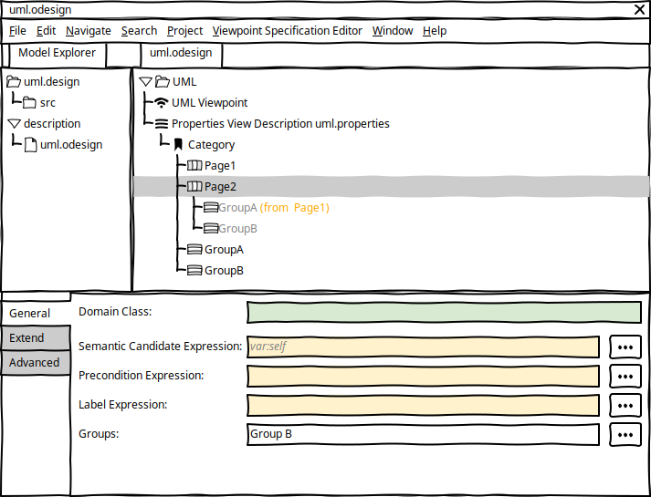
If the specifier defines in the
Page Description:
Label Expression,
Domain Class,
Semantic Candidate Expression or
Precondition Expression, these values will
override the values defined in the referenced imported description.
Groups will
be added to the groups defined by the referenced
Page Description.
Page Validations will
be added to the validations defined by the referenced
Page Description.
Filter Groups Expression is used to
filter which inherited groups are visible under the page. The
group variable can be used to check if a group must be filtered or not, the expression returns a
Boolean: true, the group is visible in the page, false it is filtered. It is possible to filter all the groups from the extended page by just returning
false all the time. In this case, the groups defined under the current page definition
overrides the groups defined in the extended page description.
Filter Validation Rules Expression is used to filter which inherited validation rules are used under the page. The
validationRule variable can be used to check if a rule must be filtered or not, the expression returns a
Boolean: true, the group is visible in the page, false it is filtered. It is possible to filter all the groups from the extended page by just returning
false all the time. In this case, the validation rules defined under the current page definition
overrides the rules defined in the extended page description.
If the
Extended Page field is not set then the filter fields are disabled:
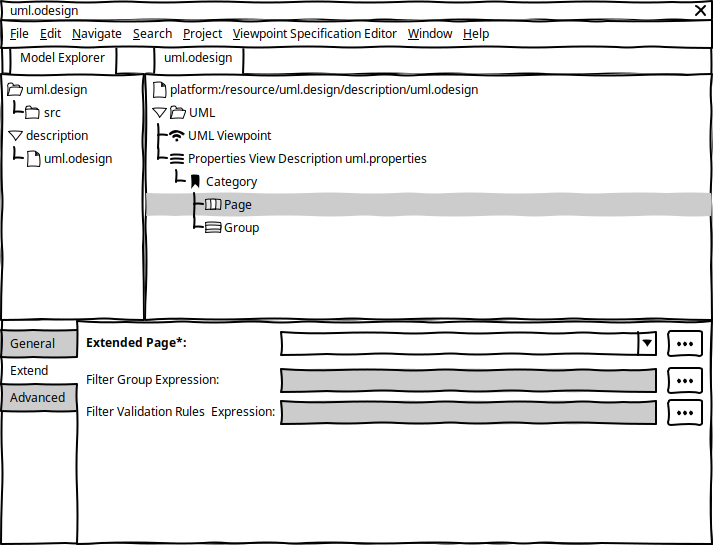
When a new VSM is created by default, the default rules will be visible as a
Page extending the default rules page. And the default values are visible in grey.
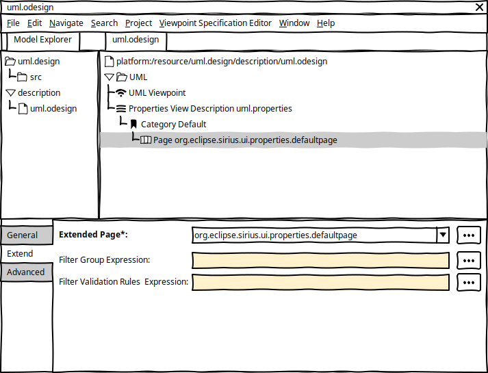
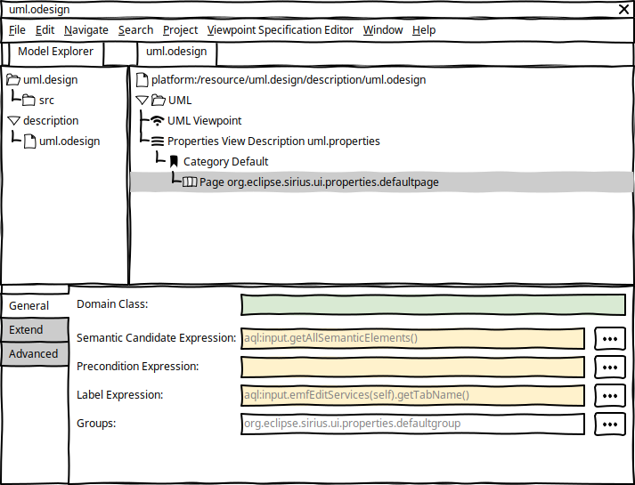
As what we detailed for the
Page Description we provide the same extension mechanism for
Group Description,
Container Description,
Widget Description,
Dynamic Mapping For,
Dynamic Mapping If with filter adapted to each case. See
Metamodel Changes section for details.
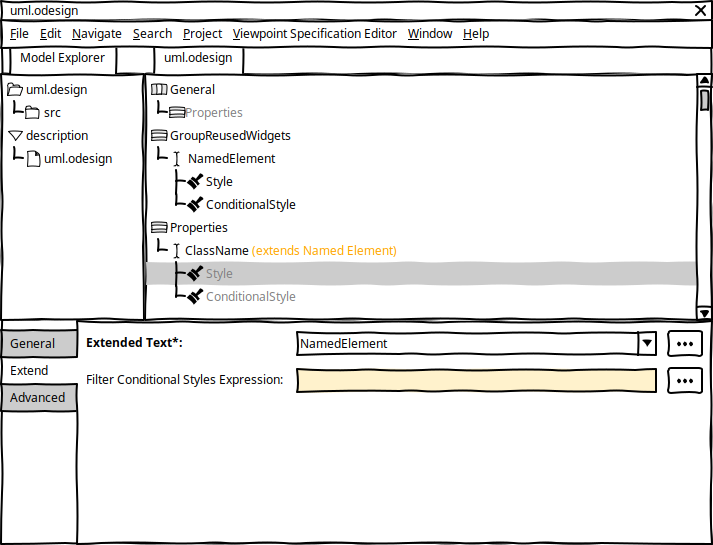
Then a
Text Description can be used to customize an existing text widget as it was explain in previous sections for the page.
A new
Extend tab is available on a
Text Description.
It defines an
Extended Text field which allows to reference an existing
Text Description.
In the tree editor:
By default the
General tab fields are set with the values coming from the extended text. The default values are set in grey in the UI. When the user edits one of these fields, it is set by default with the extended value.
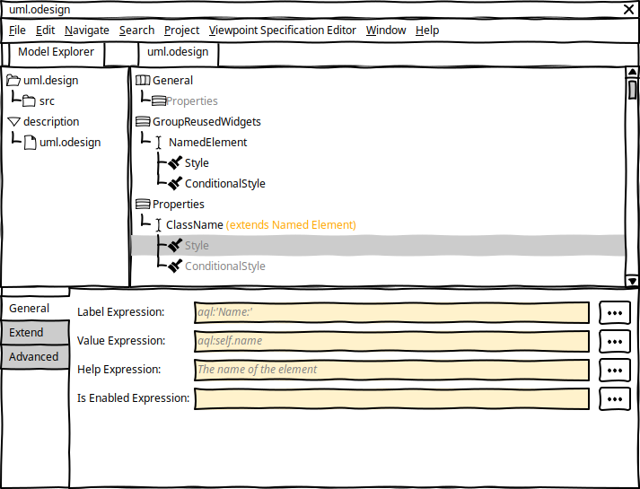
If the specifier defines in the
Text Description:
Label Expression,
Domain Class,
Semantic Candidate Expression or
Precondition Expression, these values will
override the values defined in the referenced description.
Groups will
be added to the groups defined by the referenced
Page Description.
Page Validations will
be added to the validations defined by the referenced
Page Description.
Style or
Conditional Styles, these values will
override the values defined in the referenced description.
Filter Conditional Styles Expression is used to
filter which inherited conditional styles are visible under the page. The
style variable can be used to check if a style must be filtered or not, the expression returns a
Boolean: true, the style is defined, false it is filtered. It is possible to filter all the conditional styles from the extended text by just returning
false all the time. In this case, the conditional styles defined under the current text definition
overrides the conditional styles defined in the extended text description.
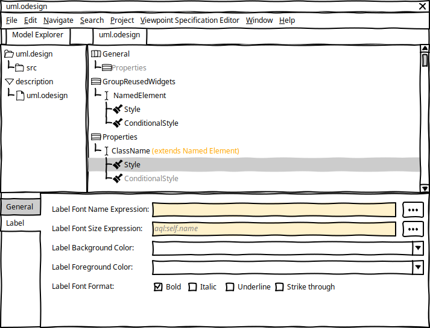
In this example, we define a new
ClassName text widget which extends the
NamedElement text widget and we override:
Label Expression to replace
Name: by
Class name:
Warning
Consequently the
XXX Description cannot define anymore attributes defining a default value or with enum as type, else we will not be able to detect if the specifier updates the extended value or if it is just the default value setted at the creation of the description. Only the description extending the
OverrideDescription are concerned.
Then we need to update the existing metamodel to validate this new requirement, only one element needs to be modified the TextAreaDescription should not define anymore a default value. See the
Metamodel Changes section for details.
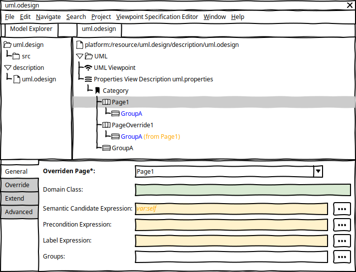
It is possible to create an
Override Description directly under a
Category Description thanks to the reference
overrides. This is used to replace an existing element in a VSM.
The following override elements can be defined directly under a
Category:
Page Override Description
Group Override Description
Container Override Description
Text Override Description
Label Override Description
Text Area Override Description
Button Override Description
Custom Override Description
Checkbox Override Description
Select Override Description
Dynamic Mapping For Override Description
DynamicMapping If Override Description
List Override Description
Radio Override Description
Hyperlink Override Description
A
Page Override Description defines an
Override Page field which allows to reference the existing
Page Description that will be replaced.
By default the
General tab fields are set with the values coming from the overridden page. The default values are set in grey in the UI. When the user edits one of these fields, it is set by default with the extended value.
In the tree editor, the groups inherited are shown under the page with a decorator referencing the overridden page:
Group X [from Page Y].
If the specifier defines in the
Page Override Description:
Label Expression,
Domain Class,
Semantic Candidate Expression or
Precondition Expression, these values will
override the values defined in the referenced overridden description.
Groups will
be added to the groups defined by the referenced
Page Description.
Page Validations will
be added to the validations defined by the referenced
Page Description.
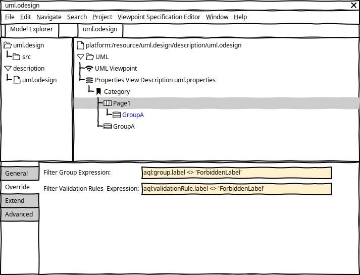
A new
Override tab is available on a
Page Override Description. It defines some filters:
Filter Groups Expression is used to
filter which inherited groups are visible under the page. The
group variable can be used to check if a group must be filtered or not, the expression returns a
Boolean: true, the group is visible in the page, false it is filtered. It is possible to filter all the groups from the extended page by just returning
false all the time. In this case, the groups defined under the current page definition
overrides the groups defined in the extended page description.
Filter Validation Rules Expression is used to filter which inherited validation rules are used under the page. The
validationRule variable can be used to check if a rule must be filtered or not, the expression returns a
Boolean: true, the group is visible in the page, false it is filtered. It is possible to filter all the groups from the extended page by just returning
false all the time. In this case, the validation rules defined under the current page definition
overrides the rules defined in the extended page description.
If the
Overriden Page field is not set then the filter fields are disabled.
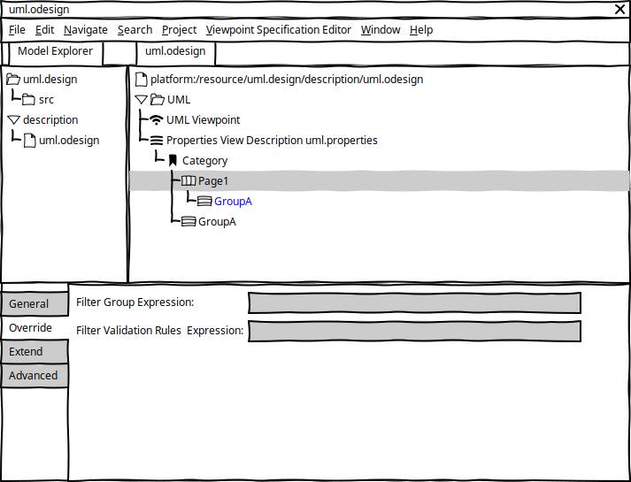
As the
Category is mandatory, we should migrate all the previous VSM to create a default category and move all the existing pages and groups under this default category.
The extension/override mechanism requires no migration as we only provide new classes in the metamodel which are not mandatory.
Metamodel properties.ecore updates:
AbstractOverrideDescription
CategoryDescription
identifier: to identify uniquely a category
pages from
ViewExtensionDescription: contains
PageDescription.
groups from
ViewExtensionDescription: contains
GroupDescription.
overrides: contains
AbstractOverrideDescription.
The same pattern is applied to all the descriptions to add the override mechanism in the metamodel, see the diagram below:
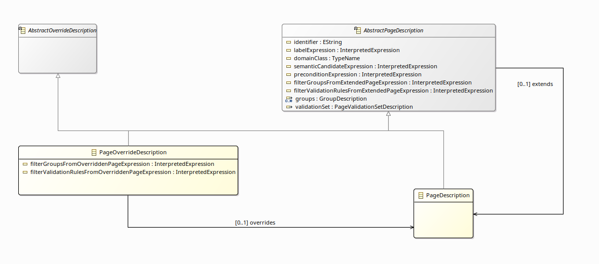
AbstractPageDescription, it contains all the features defined previously directly under the
PageDescription
extends: to reference an existing
PageDescription.
filterGroupsFromExtendedPageExpression: to filter the groups coming from the extends page description.
filterValidationRulesFromExtendedPageExpression: to filter the validations defined in the extended page description.
PageDescription to extends
AbstractPageDescription and remove all existing features
PageOverrideDescription ->
AbstractPageDescription,
AbstractOverrideDescription
overrides: to reference an existing
PageDescription
filterGroupsFromOverriddenPageExpression: to filter the groups coming from the extended page description.
filterValidationRulesFromOverriddenPageExpression: to filter the validations defined in the extended page description.
AbstractGroupDescription, it contains all the features defined previously directly under the
GroupDescription
extends: to reference an existing
GroupDescription.
filterControlsFromExtendedPageExpression: to filter the groups coming from the extended group description.
filterValidationRulesFromExtendedPageExpression: to filter the validations defined in the extended group description.
filterConditionalStylesFromExtendedPageExpression: to filter the conditional styles defined in the extended group description.
GroupDescription to extends
AbstractGroupDescription and remove all existing features
GroupOverrideDescription ->
AbstractGroupDescription,
AbstractOverrideDescription
overrides: to reference an existing
GroupDescription
filterControlsFromOverriddenPageExpression: to filter the groups coming from the overridden group description.
filterValidationRulesFromOverriddenPageExpression: to filter the validations defined in the overridden group description.
filterConditionalStylesFromExtendedPageExpression: to filter the conditional styles defined in the overridden group description.
AbstractControlDescription, it contains all the features defined previously directly under the
ControlDescription
AbstractContainerDescription, it contains all the features defined previously directly under the
ContainerDescription
extends: to reference an existing
ContainerDescription.
filterControlsFromExtendedContainerExpression: to filter the controls coming from the extended container description.
ContainerDescription to extends
AbstractContainerDescription and remove all existing features
ContainerOverrideDescription ->
AbstractContainerDescription,
AbstractOverrideDescription
overrides: to reference an existing
ContainerDescription
filterControlsFromOverriddenContainerExpression: to filter the controls coming from the overridden container description.
AbstractWidgetDescription, it contains all the features defined previously directly under the
WidgetDescription
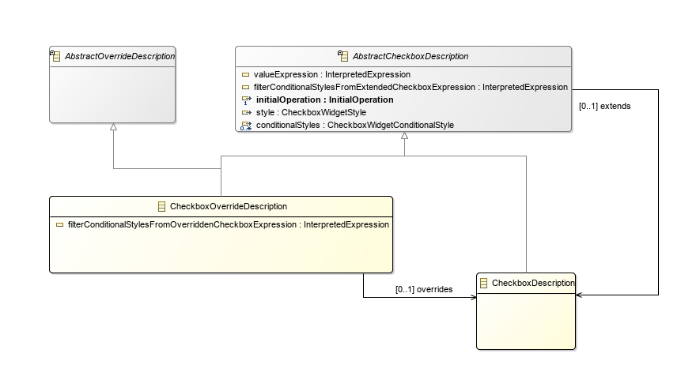
AbstractCheckboxDescription ->
AbstractWidgetDescription, it contains all the features defined previously directly under the
CheckboxDescription
extends: to reference an existing
CheckboxDescription.
filterConditionalStylesFromExtendedCheckboxExpression: to filter the styles coming from the extended checkbox description.
CheckboxDescription to extends
AbstractCheckboxDescription and remove all existing features
CheckboxOverrideDescription ->
AbstractCheckboxDescription,
AbstractOverrideDescription
overrides: to reference an existing
CheckboxDescription
filterConditionalStylesFromOverriddenCheckboxExpression: to filter the styles coming from the overridden checkbox description.
AbstractTextDescription ->
AbstractWidgetDescription, it contains all the features defined previously directly under the
TextDescription
extends: to reference an existing
TextDescription.
filterConditionalStylesFromExtendedTextExpression: to filter the styles coming from the extended text description.
TextDescription to extends
AbstractTextDescription and remove all existing features
TextOverrideDescription ->
AbstractTextDescription,
AbstractOverrideDescription
overrides: to reference an existing
TextDescription
filterConditionalStylesFromOverriddenTextExpression: to filter the styles coming from the overridden text description.
AbstractButtonDescription ->
AbstractWidgetDescription, it contains all the features defined previously directly under the
ButtonDescription
extends: to reference an existing
ButtonDescription.
filterConditionalStylesFromExtendedButtonExpression: to filter the styles coming from the extended button description.
ButtonDescription to extends
AbstractButtonDescription and remove all existing features
ButtonOverrideDescription ->
AbstractButtonDescription,
AbstractOverrideDescription
overrides: to reference an existing
ButtonDescription
filterConditionalStylesFromOverriddenButtonExpression: to filter the styles coming from the overridden button description.
AbstractLabelDescription ->
AbstractWidgetDescription, it contains all the features defined previously directly under the
LabelDescription
extends: to reference an existing
LabelDescription.
filterConditionalStylesFromExtendedLabelExpression: to filter the styles coming from the extended label description.
LabelDescription to extends
AbstractLabelDescription and remove all existing features
LabelOverrideDescription ->
AbstractLabelDescription,
AbstractOverrideDescription
overrides: to reference an existing
LabelDescription
filterConditionalStylesFromOverriddenLabelExpression: to filter the styles coming from the overridden label description.
filterActionsFromOverriddenLabelExpression: to filter the actions coming from the overridden label description.
AbstractSelectDescription ->
AbstractWidgetDescription, it contains all the features defined previously directly under the
SelectDescription
extends: to reference an existing
SelectDescription.
filterConditionalStylesFromExtendedSelectExpression: to filter the styles coming from the extended select description.
SelectDescription to extends
AbstractSelectDescription and remove all existing features
SelectOverrideDescription ->
AbstractSelectDescription,
AbstractOverrideDescription
overrides: to reference an existing
SelectDescription
filterConditionalStylesFromOverriddenSelectExpression: to filter the styles coming from the overridden select description.
AbstractTextAreaDescription ->
AbstractWidgetDescription, it contains all the features defined previously directly under the
TextAreaDescription and the one inherited from
TextDescription:
valueExpression,
initialOperation,
style,
conditionalStyles
lineCount attribute as we should not define any default value or enum attributes.
extends: to reference an existing
TextAreaDescription.
filterConditionalStylesFromExtendedTextAreaExpression: to filter the styles coming from the extended text description.
TextAreaDescription to extends
AbstractTextAreaDescription and remove all existing features
TextAreaOverrideDescription ->
AbstractTextAreaDescription,
AbstractOverrideDescription
overrides: to reference an existing
TextAreaDescription
filterConditionalStylesFromOverriddenTextAreaExpression: to filter the styles coming from the overridden text description.
AbstractRadioDescription ->
AbstractWidgetDescription, it contains all the features defined previously directly under the
RadioDescription
extends: to reference an existing
RadioDescription.
filterConditionalStylesFromExtendedRadioExpression: to filter the styles coming from the extended radio description.
RadioDescription to extends
AbstractRadioDescription and remove all existing features
RadioOverrideDescription ->
AbstractRadioDescription,
AbstractOverrideDescription
overrides: to reference an existing
RadioDescription
filterConditionalStylesFromOverriddenRadioExpression: to filter the styles coming from the overridden radio description.
AbstractListDescription ->
AbstractWidgetDescription, it contains all the features defined previously directly under the
ListDescription
extends: to reference an existing
ListDescription.
filterConditionalStylesFromExtendedListExpression: to filter the styles coming from the extended list description.
filterActionsFromExtendedListExpression: to filter the actions coming from the extended list description.
ListDescription to extends
AbstractListDescription and remove all existing features
ListOverrideDescription ->
AbstractListDescription,
AbstractOverrideDescription
overrides: to reference an existing
ListDescription
filterConditionalStylesFromOverriddenListExpression: to filter the styles coming from the overridden list description.
filterActionsFromOverriddenListExpression: to filter the actions coming from the overridden list description.
AbstractHyperlinkDescription ->
AbstractWidgetDescription, it contains all the features defined previously directly under the
HyperlinkDescription
extends: to reference an existing
HyperlinkDescription.
filterConditionalStylesFromExtendedHyperlinkExpression: to filter the styles coming from the extended hyperlink description.
HyperlinkDescription to extends
AbstractHyperlinkDescription and remove all existing features
HyperlinkOverrideDescription ->
AbstractHyperlinkDescription,
AbstractOverrideDescription
overrides: to reference an existing
HyperlinkDescription
filterConditionalStylesFromOverriddenHyperlinkExpression: to filter the styles coming from the overridden hyperlink description.
AbstractCustomDescription ->
AbstractWidgetDescription, it contains all the features defined previously directly under the
CustomDescription
extends: to reference an existing
CustomDescription.
filterConditionalStylesFromExtendedCustomExpression: to filter the styles coming from the extended custom description.
CustomDescription to extends
AbstractCustomDescription and remove all existing features
CustomOverrideDescription ->
AbstractCustomDescription,
AbstractOverrideDescription
overrides: to reference an existing
CustomDescription
filterConditionalStylesFromOverriddenCustomExpression: to filter the styles coming from the overridden custom description.
AbstractDynamicMappingForDescription ->
AbstractControlDescription, it contains all the features defined previously directly under the
DynamicMappingFor
identifier: to identify uniquely a dynamic mapping for description
extends: to reference an existing
DynamicMappingForDescription.
filterIfsFromExtendedDynamicMappingForExpression: to filter the ifs coming from the extended dynamic mapping for description.
DynamicMappingFor to
DynamicMappingForDescription and update it to extends
AbstractDynamicMappingForDescription and remove all existing features
DynamicMappingForOverrideDescription ->
AbstractDynamicMappingForDescription,
AbstractOverrideDescription
overrides: to reference an existing
DynamicMappingForDescription
filterIfsFromOverriddenDynamicMappingForExpression: to filter the ifs coming from the overridden dynamic mapping for description.
AbstractDynamicMappingIfDescription, it contains all the features defined previously directly under the
DynamicMappingIf
identifier: to identify uniquely a dynamic mapping if description
extends: to reference an existing
DynamicMappingIfDescription.
DynamicMappingIf to
DynamicMappingIfDescription and update it to extends
AbstractDynamicMappingIfDescription and remove all existing features
DynamicMappingIfOverrideDescription ->
AbstractDynamicMappingIfDescription,
AbstractOverrideDescription
overrides: to reference an existing
DynamicMappingIfDescription
The properties metamodel is updated so API changes will occur in
org.eclipse.sirius.properties.
A new VSM pre-processing mechanism will be develop to transform the original VSM using reuse and override mechanism to a flat VSM. Then, this falt VSM will be used by the DescriptionConverter which converts Sirius model to EEF model and so this converter must not change.
The EEF metamodel must not change neither, as the pre-processor will manage the conversion. For example a
PageOverrideDescription will be converted to a
PageDescription and then to an
EEFPageDescription which will be the results of the concatenation of the
PageOverrideDescription and the referenced overridden page description.
The advanced widget custom API must be updated to support extension and override mechanism.
In the VSM editor, the specifier UI will change:
In the specifier properties view section, we should add a new section about the Extends/Overrides mechanism to details all the new elements.
We should add tests to check the following use cases:
The implementation will be done mostly in the Sirius new pre-processor. EEF does not provide any reuse/override mechanism.